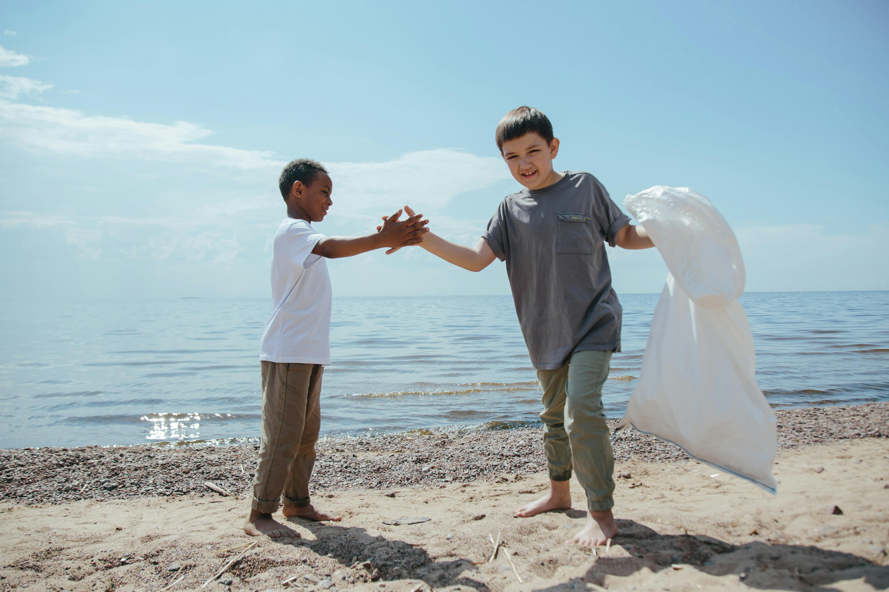
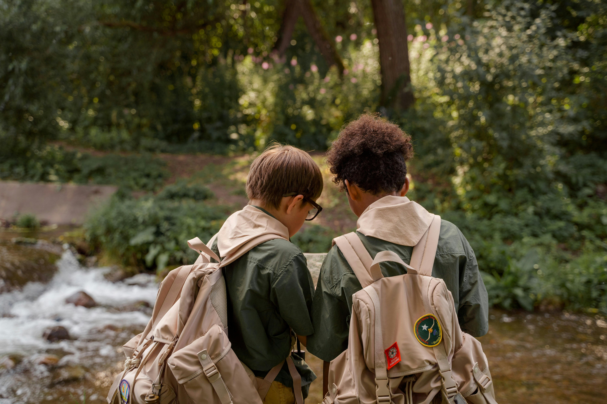
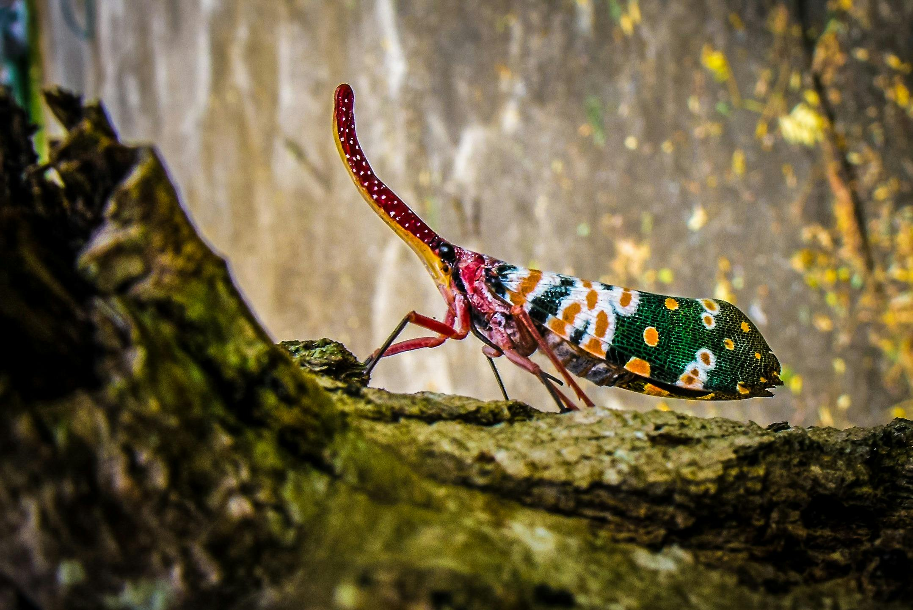

Nossos Projetos Em Ação
Explore as iniciativas que estão fazendo a diferença ao redor do mundo.

Proteção da Amazônia
Recuperação de áreas degradadas e monitoramento de desmatamento ilegal. Uma iniciativa vital.

Limpeza de Praias e Oceanos
Remoção de lixo marinho em áreas costeiras críticas no litoral brasileiro.

Educação e Conscientização
Workshops e palestras em escolas para fomentar a nova geração de defensores ambientais.

Resgate e Conservação da Fauna
Cuidado e reabilitação de animais selvagens feridos, com foco em espécies ameaçadas.